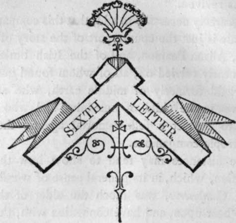

Sixth Letter
Description
This section is from the book "Letters On Demonology And Witchcraft", by Walter Scott. Also available from Amazon: Letters On Demonology & Witchcraft.
Sixth Letter
Immediate Effect of Christianity on Articles of Popular Superstition—Chaucer's Account of the Roman Catholic Priests banishing the Fairies—Bishop Corbett imputes the same Effect to the Reformation—his Verses on tluxt Subject—his Iter Sep-tentrionale—Robin Goodfellow, and other Superstitions mentioned by Reginald Scot—Character of the English Fairies—• The Tradition had become obsolete in that Author's Time— That of Witches remained in vigour—but impugned by various Authors after the Reformation, as Wierus, Naudaius, Scot, and others—Demonology defended by Bodinus, Remigius, <etc.— Their mutual abuse of each other—Imperfection of Physical Science at this Period, and the predominance of Mysticism in that Department.
ALTHOUGH the influence of the Christian religion was not introduced to the nations of Europe with such radiance as to dispel at once those clouds of superstition which continued to obscure the understanding of hasty and ill-instructed converts, there can be no doubt that its immediate operation went to modify the erroneous and extravagant articles of credulity, which lingered behind the old Pagan faith, and which gave way before it, in proportion as its light became more pure and refined from the devices of men.
The poet Chaucer, indeed, pays the Church of Rome, with its monks and preaching friars, the compliment of having, at an early period, expelled from the land all spirits of an inferior and less holy character. The verses are curious as well as picturesque, and may go some length to establish the existence of doubts concerning the general belief in fairies among the well-instructed in the time of Edward III.
The fairies of whom the bard of Woodstock talks, are, it will be observed, the ancient Celtic breed, and he seems to refer for the authorities of his tale to Bre-tagne, or Armorica, a genuine Celtic colony.
" In old time of the King Artour, Of "which that Bretons speken great honour, All was this land fulfilled of faerie ; The Elf queen, with her joly company, Danced full oft in many a grene mead. This was the old opinion, as I rede— I speake of many hundred years ago, But now can no man see no elves mo. For now the great charity and prayers Of limitours,* and other holy freres, That searchen every land and every stream, As thick as motes in the sunne-beam, Blessing halls, chambers, kitchenes, and bonres, Cities and burghes, castles high and towers, Thropes and barnes, sheep-pens and dairies, This maketh that there ben no fairies.
* Friars limited to beg within a certain district.
For there as wont to walken was an elf, There walketh now the limitour himself, In under nichtes and in morwenings, And saith his matins and his holy things, As he goeth in his limitation. Women may now go safely up and doun; In every bu6h, and under every tree, There is no other incubus than he, And he ne will don them no dishonour." *
When we see the opinion which Chaucer has expressed of the regular clergy of his time, in some of his other tales, we are tempted to suspect some mixture of irony in the compliment which ascribes the exile of the fairies, with which the land was " fulfilled," in King Arthur's time, to the warmth and zeal of the devotion of the limitary friars. Individual instances of scepticism there might exist among scholars, but a more modern poet, with a vein of humour not unworthy of Geoffrey himself, has with greater probability delayed the final banishment of the fairies from England, that is, from popular faith, till the reign of Oueen Elizabeth, and has represented their expulsion as a consequence of the change of religion. Two or three verses of this lively satire may be very well worth the reader's notice, who must, at the same time, be informed that the author, Dr. Corbett, was nothing less than the Bishop of Oxford and Norwich in the beginning of the seventeenth century. The poem is named, " A proper new Ballad, entitled the Fairies' Farewell, to be sung or whistled to the tune of the Meadow Brow, by the learned; by the unlearned, to the tune of Fortune."—
* Wife of Bath's Tale.
" Farewell, rewards and fairies,
Good housewives now may say, For now foul sluts in dairies
Do fare as well as they; And though they sweep their hearths no less
Thau maids were wont to do, Yet who of late for cleanliness
Finds sixpence in her shoe ?
" Lament, lament, old abbies,
The fairies lost command; They did but change priests' babies,
But some have changed your land; And all your children sprung from hence
Are now grown Puritans, "Who live as changelings ever since,
For love of your domains.
At morning and at evening both,
You merry were and glad, So little care of sleep and sloth
Those pretty ladies had. When Tom came home from labour,
Or Cis to milking rose, Then merrily, merrily went then tabor,
And merrily went their toes.
" Witness, those rings and roundelays
Of theirs, which yet remain, Were footed, in Queen Mary's days,
On many a grassy plain; But 6ince of late Elizabeth,
And later, James came in, They never danced on any heath
As when the time hath bin.
'By which we note, the fairies
Were of the old profession, Their songs were Ave Maries,
Their dances were procession. But now, alas! they all are dead,
Or gone beyond the seas; Or farther for religion fled,
Or else they take their ease."
The remaining part of the poem is dedicated to the praise and glory of old "William Chourne, of Staffordshire, who remained a true and stanch evidence in behalf of the departed elves, and kept, much it would seem to the amusement of the witty bishop, an inexhaustible record of their pranks and feats, whence the concluding verse :—
" To William all give audience, And pray ye for his noddle, For all the fairies' evidence Were lost if that were addle."*
Continue to: